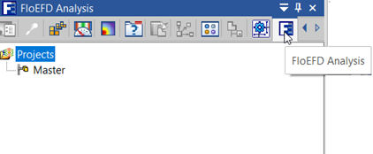
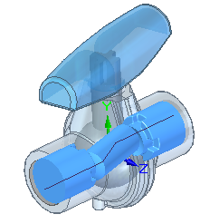
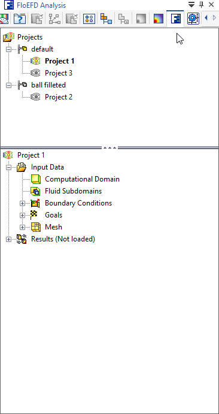
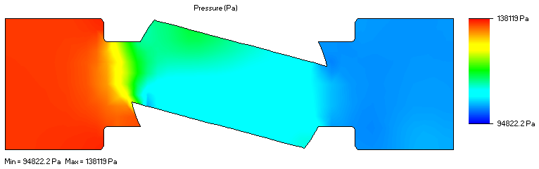

Flow simulation process overview
Use this general process to define a fluid flow analysis on your assembly.
Define a flow analysis project.
Similar to Solid Edge Simulation finite element analysis, use the Simcenter FLOEFD for Solid Edge analysis interface to:
-
Open your assembly model in Solid Edge.
-
Display the commands on the Flow Analysis tab and on the FloEFD Analysis pane in PathFinder:

-
Use the Tools group→Check Geometry command to validate model geometry and verify the fluid volume of the existing model is non-zero.

-
Use the Wizard command to define a project, including the type of analysis (internal or external), fluid substance properties, and units.
-
Specify inputs for the calculation, including boundary conditions that mimic the movement of the fluid.
Use the commands on the Insert group→Conditions menu to create flow inlet and outlet boundary conditions, simulate flow devices (fans, heat sinks, LEDs, plates, batteries), and specify wall conditions on selected fluid-contacting faces for both internal and external flow analysis. You also can define thermal wall conditions on external walls for internal flow analysis of heat conduction in solids.

-
Run the solution and monitor and control the calculation.
-
Review the graphs and plots obtained in the results.

You can apply the fluid pressure and temperature results as inputs to a finite element analysis of your design. For more information, see Use fluid flow results in a linear static or thermal study.